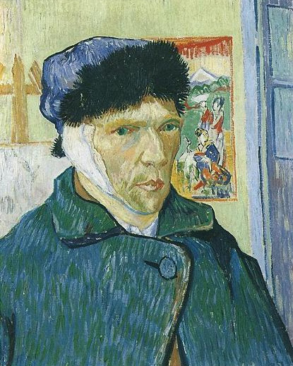
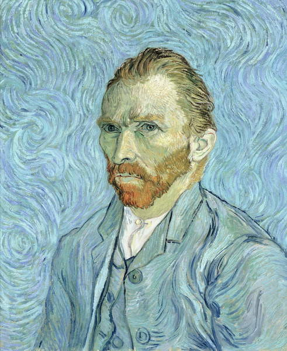

"I have put my heart and soul into my work, and have lost my mind in the process."
Vincent Van Gogh is regarded as one of the greatest and most well known artists of all time, producing masterpieces such as "The Starry Night" and "Sunflowers." Perhaps the defining quality of Van Gogh's legacy is his reputation as the quitessential tortured artist. Throughout his life Van Gogh painted over 35 self-portraits. The majority of them were done while he was living in Paris from 1886 to 1888. He was short on money in that period and struggled to find models, so the artist chose the simplest solution and painted himself. While these portraits tell us that he had red hair, green eyes and an angular face, many of them seem to have a deeper meaning that reflect his sense of self and his anguished soul at the time of its creation. Let's take a look at what some of Van Gogh's self-portraits reveal about the life and mental psychosis of the great artist.
Self-Portrait as a Painter
Van Gogh presented himself in this self-portrait as a painter, holding a palette and paintbrushes behind his easel. Having lived in Paris for the past two years, Van Gogh was surrounded by a milieu of young avant-garde artists experimenting with new styles. His time in Paris resulted in a transformative shift in his work, from the dark, somber hues of his early realist paintings to the colorful, textured flowers and portraits that most people associate with Van Gogh today. "Self-Portrait as a Painter" was the last work Van Gogh produced in Paris, finishing it in the early months of 1888. The city had exhausted him both mentally and physically. He told his sister how he had portrayed himself with “wrinkles in forehead and around the mouth, stiffly wooden, a very red beard, quite unkempt and sad.” Tired of the busy city life and the cold northern climate, Van Gogh headed to the South of France in search of warmer weather, bright light, and colorful scenery. Setting up in Arles, he dreamed of opening a "Studio of the South," where like-minded artists could share ideas and work side by side.
Self-Portrait with Bandaged Ear
This painting expresses Van Gogh's artistic power and personal struggles. Van Gogh painted it in January 1889, a week after leaving the hospital. He had received treatment there after cutting off most of his left ear (shown here as the bandaged right ear because he painted himself in a mirror). This self-mutilation was a desperate act committed a few weeks earlier, following a heated argument with his fellow painter Paul Gauguin who had come to stay with him in Arles. Van Gogh returned from the hospital to find Gauguin gone and with him, the dream of setting up the "Studio of the South." The fur cap Van Gogh wears in this painting is a reminder of the harsh working conditions he faced in January 1889, as he wore it to secure his bandage in place and to ward off the winter cold. This self-portrait is thus powerful proof of Van Gogh’s determination to continue painting. Vincent did not portray himself as a sick, broken man for the sake of effect or to arouse pity. He was convinced that contintuing to paint would help him to heal, writing to his sister, "I retain all good hope."

Self-Portrait, 1889
Painted in September of 1889, this is largely regarded as Van Gogh's last self-portrait before commiting suicide in July of the following year. One of the immediate striking elements of this self portrait is the whirling, chaotic background. Some critics believe this points to Van Gogh’s psychotic mental state at the time. Much of the attention is focused on his face, his eyes having a determined yet weary stare, and his emaciated face showing a closed-off expression. As he wrote to his brother, Theo, “You will need to study [the picture] for a time. I hope you will notice that my facial expressions have become much calmer, although my eyes have the same insecure look as before, or so it appears to me.” The frenetic energy of the artwork suggests the disorientation that Van Gogh was feeling after his time in a psychiatric hospital following the incident in which he cut off his ear. He described these episodes in a letter to his sister, stating, “I was completely unaware of anything that I was saying or doing.” Although the painting has a dark history, it shows Van Gogh’s mastery of the self portrait and depicts a pivotal moment in his life.

Van Gogh's Legacy
Vincent Van Gogh lived his life creating iconic pieces of wonder and beauty. What is it about Van Gogh that keeps people interested? He is one of the most iconic painters of all time – known all around the world – and he has never truly fallen from the artistic spotlight. The intrigue surrounding his name has become more about what Van Gogh means, and less about the man himself, it would seem. Van Gogh has transcended into legend, his works a representation of overcoming depression and anxiety to make the world a more beautiful place. He was dedicated to the purest form of finding all the good things that the world had to offer, despite only having gained a few of those good things in life for himself. His works create feelings of wonder, joy, sadness, despair, and anguish in those that view them. One of the most memorable qualities of his artwork is the feeling of movement he is able to capture through use of color and brushwork. Watch some of his paintings come to life in the gallery below!